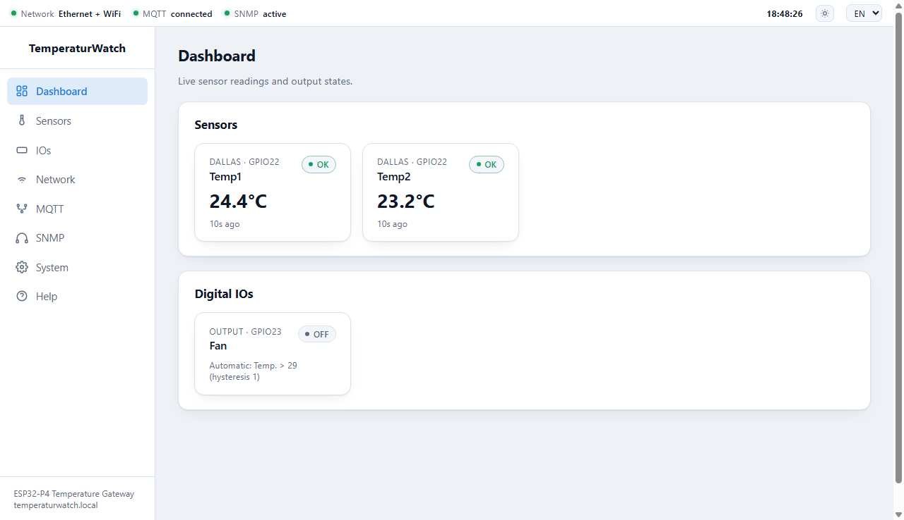
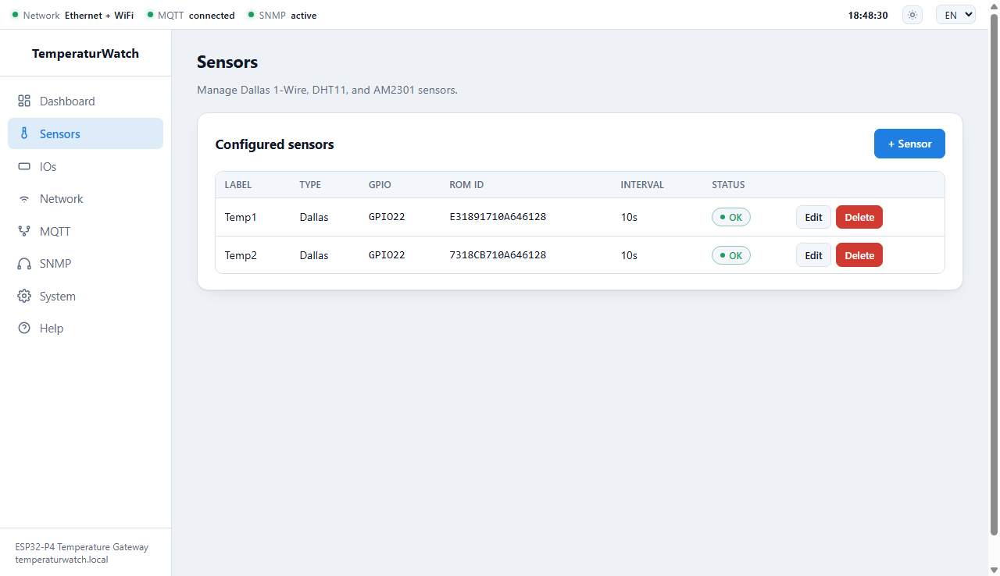
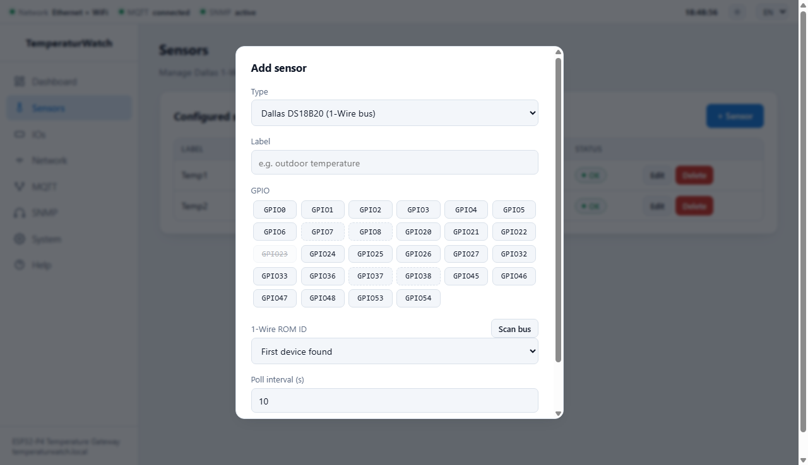
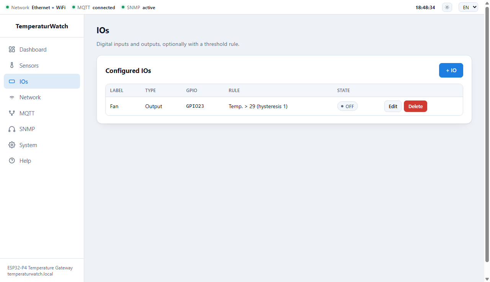
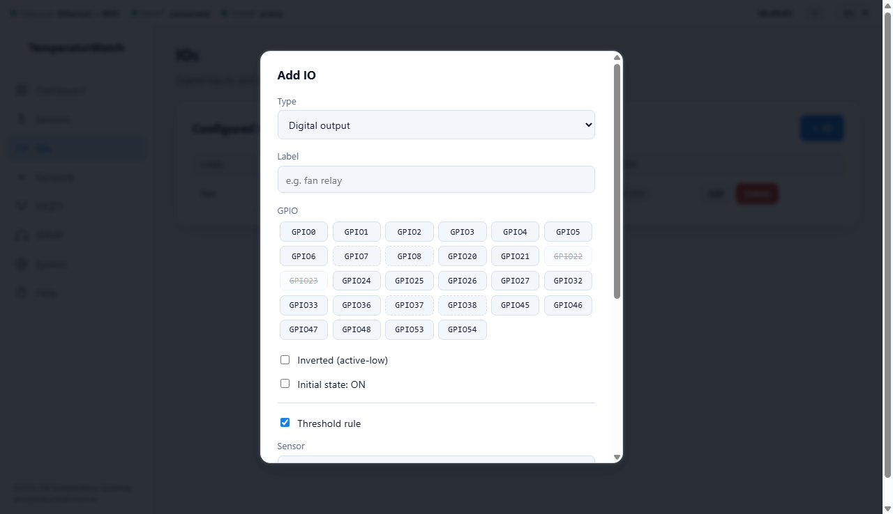
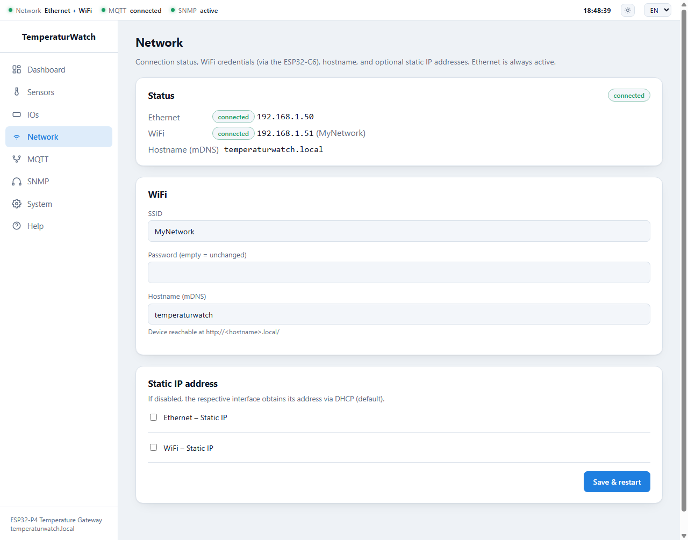
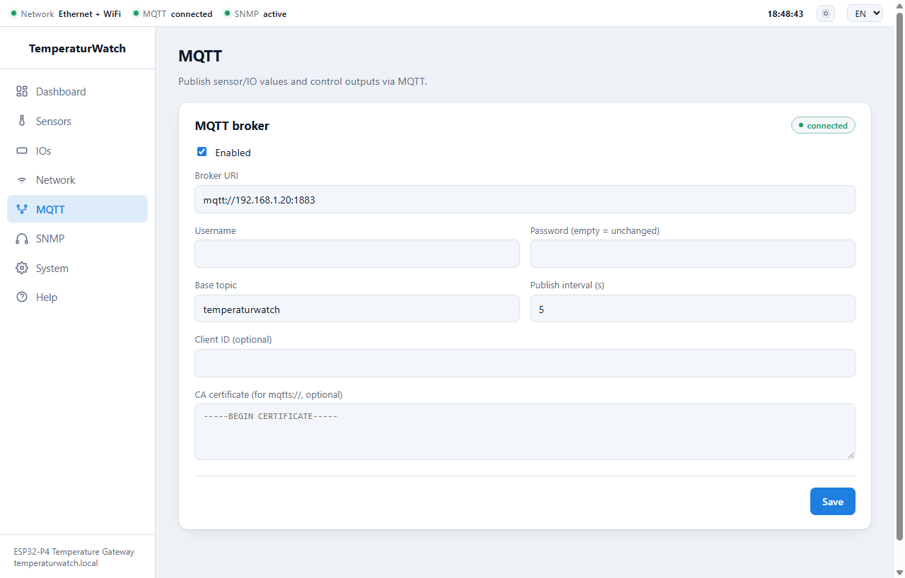
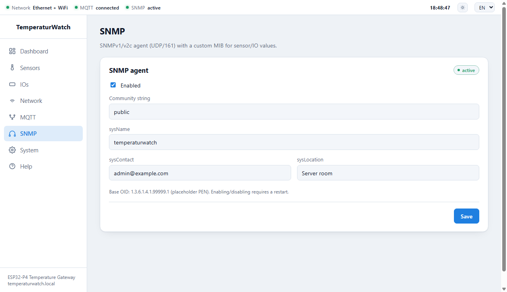
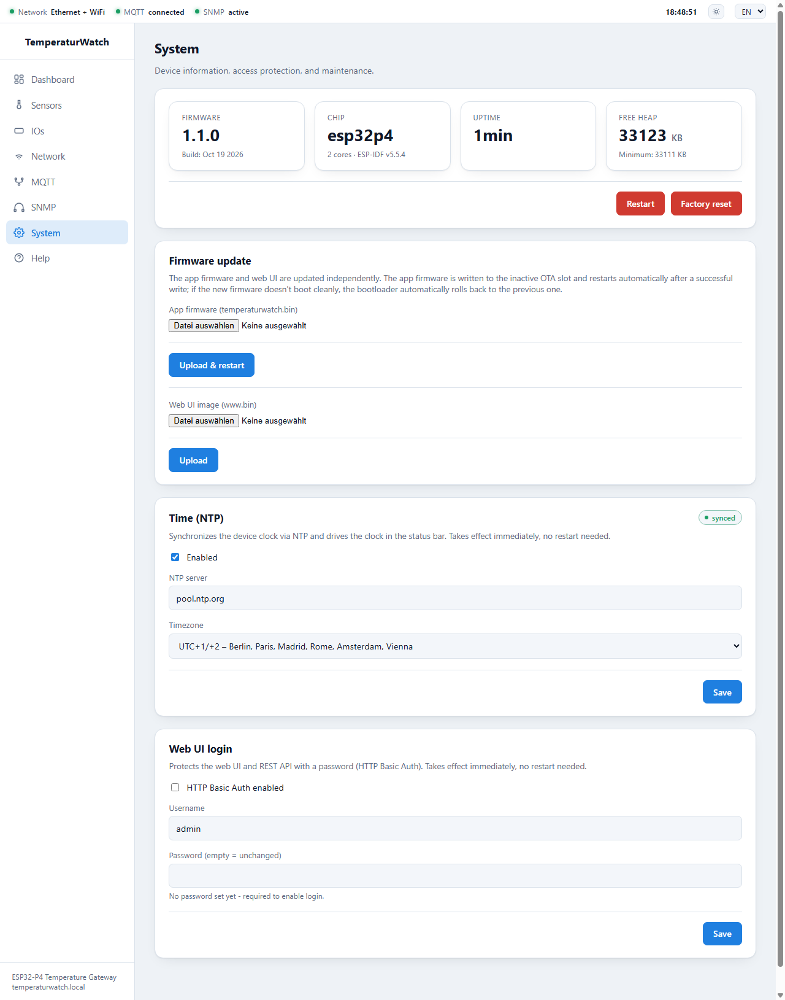

TemperaturWatch is a temperature and humidity gateway based on the Waveshare ESP32-P4-WIFI6-POE-ETH. It reads Dallas DS18B20, DHT11, and AM2301 sensors, switches digital outputs (e.g. relays for fans or alarm devices) manually or automatically via threshold rules, and provides all values through a web interface, REST API, MQTT, and SNMP. This manual is written for administrators who install the device, integrate it into the network and monitoring environment, and operate it.
| Area | Function |
|---|---|
| Sensors | Dallas DS18B20 (1-Wire, several sensors on one pin), DHT11, AM2301/DHT21/DHT22; up to 32 sensors |
| Digital IOs | Outputs and inputs, optionally inverted; outputs manually or via threshold rule with hysteresis; up to 32 entries |
| Network | Ethernet (always active) and WiFi (via the ESP32-C6 co-processor), DHCP or static IP per interface, mDNS hostname |
| Interfaces | Web interface, REST API, MQTT (optional TLS), SNMPv1/v2c agent |
| Time | NTP synchronization with selectable timezone |
| Maintenance | Firmware and web UI update over the network (OTA) with automatic rollback, optional login |
| Languages | Web interface and help in German and English, day/night mode |
The board carries an ESP32-P4 (32 MB flash, 32 MB PSRAM). WiFi/Bluetooth is provided by an onboard ESP32-C6 co-processor; Ethernet runs through the internal MAC with an IP101 PHY and works without configuration. Sensors and IOs can only be connected to the 28 GPIOs of the 40-pin header; all other GPIOs are used internally (Ethernet, WiFi link, SD card, USB, display, audio) and are rejected by the firmware. All GPIOs operate at 3.3 V.
| Pin | Signal | Pin | Signal | Pin | Signal | Pin | Signal |
|---|---|---|---|---|---|---|---|
| 1 | 5V | 11 | GPIO22 | 21 | GPIO1 | 31 | GPIO54 |
| 2 | 3V3 | 12 | GPIO21 | 22 | GPIO2 | 32 | GPIO26 |
| 3 | 5V | 13 | GND | 23 | GPIO36 | 33 | GND |
| 4 | GPIO7 (I2C SDA) | 14 | GPIO20 | 24 | GPIO0 | 34 | GPIO48 |
| 5 | GND | 15 | GPIO5 | 25 | GPIO32 | 35 | GPIO46 |
| 6 | GPIO8 (I2C SCL) | 16 | GPIO6 | 26 | GND | 36 | GPIO53 |
| 7 | GPIO37 (debug UART TX) | 17 | GPIO4 | 27 | GPIO25 | 37 | GPIO27 |
| 8 | GPIO23 | 18 | 3V3 | 28 | GPIO24 | 38 | GPIO47 |
| 9 | GPIO38 (debug UART RX) | 19 | GND | 29 | GND | 39 | GPIO45 |
| 10 | GND | 20 | GPIO3 | 30 | GPIO33 | 40 | GND |
GPIO7/8 (I2C) and GPIO37/38 (debug UART) remain assignable but are marked as having a default function. In the web UI, GPIOs that are already in use are shown struck through.
A new board only needs to be flashed once via USB; all further updates run over the network (chapter 11). The five files (bootloader.bin, partition-table.bin, ota_data_initial.bin, temperaturwatch.bin, www.bin) are available on the GitHub release page. Put all files in one folder, connect the board via USB, and run (adjust the port; use python -m esptool instead of esptool if necessary):
python -m esptool --chip esp32p4 -b 460800 --before default_reset --after hard_reset write_flash \ --flash_mode dio --flash_size 32MB --flash_freq 40m \ 0x2000 bootloader.bin 0x8000 partition-table.bin 0x10000 ota_data_initial.bin \ 0x20000 temperaturwatch.bin 0x820000 www.bin
The web interface is built into the firmware and needs no cloud and no additional software. The navigation is on the left (Dashboard, Sensors, IOs, Network, MQTT, SNMP, System, Help); the status bar is at the top.

| Status bar element | Meaning |
|---|---|
| Network | Shows Ethernet, WiFi, or Ethernet + WiFi as soon as the respective interface has an IP address, otherwise no IP |
| MQTT | connected, disconnected (enabled but no broker connection), or disabled |
| SNMP | active, restart needed (enabled but not started yet), or disabled |
| Time | Device time in the configured timezone; shown dimmed until synchronized via NTP (tooltip with date) |
| Sun icon | Day/night mode toggle; the choice is stored in the browser |
| EN / DE | Language of the web interface and help; the choice is stored in the browser, ?lang=de in the URL takes precedence |
The Help page contains the REST API, MQTT, and PRTG guides directly on the device – readable without internet access.
The dashboard shows all sensors (type, GPIO, label, reading, age of the reading, status) and all IOs and refreshes every four seconds. Outputs without a rule can be switched on and off directly with a button; for outputs with an active threshold rule, the rule ("Automatic: …") is shown instead and manual switching is blocked.
| Sensor status | Meaning |
|---|---|
| waiting | No reading yet since startup or creation |
| OK | Last reading succeeded |
| Error | Last reading failed (wiring, sensor, pull-up – see chapter 13) |

| Type | Notes |
|---|---|
| Dallas DS18B20 | 1-Wire bus. Several Dallas sensors may share the same GPIO and are told apart by their ROM ID. Provides temperature only. |
| DHT11 | Temperature and humidity, coarse resolution. One sensor per GPIO. |
| AM2301 / DHT21 / DHT22 | Temperature and humidity, higher accuracy. One sensor per GPIO. |


| Setting | Meaning |
|---|---|
| Type | Digital output or Digital input (inputs use an internal pull-up, without debouncing) |
| Inverted (active-low) | Reverses the logic; "ON" then corresponds to a low level on the pin |
| Initial state: ON | State of an output right after boot |
| Threshold rule | Switches an output automatically based on a sensor value (see below) |

A rule links a sensor and its measured value (temperature or humidity) with a condition (>, ≥, <, ≤) and a threshold. The hysteresis prevents rapid on/off switching (relay chatter) near the threshold:
While a rule is active, it controls the output; manual switching (web UI, REST API, MQTT) is rejected. If the sensor delivers no valid reading, the rule leaves the output unchanged. To switch manually, remove the rule.

The Status panel shows the connection state with the current IP address per interface, as well as the mDNS hostname. Ethernet and WiFi can be active at the same time and then have separate addresses.
| Setting | Meaning |
|---|---|
| SSID / password | WiFi credentials (2.4 GHz only). An empty password field keeps the existing password. Without an SSID, WiFi stays inactive. |
| Hostname (mDNS) | The device is reachable at http://<hostname>.local/ (max. 31 characters) |
| Static IP | Can be enabled separately per interface: IP address, subnet mask, gateway, optional DNS server. Disabled = DHCP. |
Save & restart saves the settings and restarts the device – network changes only take effect after the restart.

| Topic (below base topic) | Direction | Content |
|---|---|---|
| <base>/status | Device → broker | online / offline (retained, last will) |
| <base>/sensor/<id>/temperature_c | Device → broker | Temperature, e.g. 21.50 |
| <base>/sensor/<id>/humidity_pct | Device → broker | Humidity (DHT/AM2301 only) |
| <base>/io/<id>/state | Device → broker | ON / OFF (retained) |
| <base>/io/<id>/set | Broker → device | ON/OFF/1/0/true/false switches an output (not while a rule is active) |
Details and examples (Home Assistant, Node-RED, TLS) are in the MQTT guide on the Help page and in docs/MQTT_SETUP.en.md.

The SNMPv1/v2c agent listens on UDP port 161. Enabling or disabling it requires a restart; changing the community or the system fields (sysName, sysContact, sysLocation) takes effect immediately. The default community is public – change it for production use.
| OID (base 1.3.6.1.4.1.99999.1) | Content |
|---|---|
| .2.1.0 | sensorCount |
| .2.2.1.{1..8}.<n> | sensorTable: index, ID, label, type, temperature×10, humidity×10 (−1 = n/a), valid, age (s) |
| .3.1.0 | ioCount |
| .3.2.1.{1..5}.<n> | ioTable: index, ID, label, type, state |
| .1.1.0 … .1.5.0 | System fields (private); additionally the standard MIB-II group 1.3.6.1.2.1.1.* |
Monitoring integration: A step-by-step guide for PRTG (no plugin, using "SNMP Custom Table") is on the Help page and in docs/PRTG_SETUP.en.md; for CheckMK there is a ready-made plugin in contrib/checkmk/. Device discovery works because, besides the private MIB, the device also answers the standard MIB-II system group (including sysObjectID).

The cards show firmware version and build date, chip, uptime, and free heap. Restart reboots the device; the configuration is kept. Factory reset deletes the network, MQTT, SNMP, sensor, IO, and login configuration and restarts; the time settings are kept. Afterwards the device is reachable without a password again.
NTP is active from the factory (server pool.ntp.org, timezone Europe/Berlin). The badge shows synced or waiting for sync. Choose the timezone from a list of common regions, or any other one via "Custom" as a POSIX TZ string (e.g. CET-1CEST,M3.5.0,M10.5.0/3). On networks without internet access, enter an internal NTP server; the device needs access to UDP port 123. Changes take effect immediately.
Enables password protection (HTTP Basic Auth) for the web interface and the REST API. A password must be set before login can be enabled. Changes take effect immediately; afterwards the browser asks for the credentials.
Firmware and web UI are updated independently over the network – in the web UI under System → Firmware update or via curl. No USB cable is needed.
| File | Purpose | Behavior |
|---|---|---|
| temperaturwatch.bin | App firmware | Written to the inactive OTA slot; the device then restarts automatically |
| www.bin | Web UI and help | Written directly to the web partition; no restart, the web UI is briefly unavailable meanwhile |
curl -X POST --data-binary @temperaturwatch.bin http://<ip>/api/system/ota curl -X POST --data-binary @www.bin http://<ip>/api/system/ota-web
There is no export button, but the configurations can be read via the REST API and (for sensors and IOs) restored with PUT. Passwords are not included and must be re-entered when restoring.
for p in sensors/config io/config network/config mqtt/config snmp/config time/config; do curl -s http://<ip>/api/$p -o "backup_$(echo $p | tr / _).json" done
| Symptom | Cause / remedy |
|---|---|
| Web UI not reachable | Check link LED/cable; look up the IP in the DHCP list or try temperaturwatch.local; after a wrong static IP, only reflashing via USB helps |
| WiFi does not connect | Check SSID/password; 2.4 GHz networks only; was the device restarted after saving? Without an SSID, WiFi stays inactive |
| Sensor shows "Error" or "waiting" | Check wiring and 3.3 V supply, pull-up on the data line, correct GPIO, poll interval at least 2 s; Dallas: use "Scan bus" to check whether the sensor is found and the ROM ID matches |
| Dallas bus scan finds nothing | Pull-up (4.7 kΩ to 3V3) missing, data/ground swapped, or wrong GPIO |
| Output cannot be switched | A threshold rule is active (manual switching blocked) – remove the rule; with inverted logic, "ON" corresponds to a low level |
| MQTT stays "disconnected" | Check broker URI (mqtt:///mqtts://), credentials, firewall; for TLS, store the matching CA certificate |
| SNMP does not respond / "restart needed" | Restart the device after enabling; check community and UDP port 161. Monitoring tools need the standard MIB-II system group for discovery – it is present |
| Time stays "waiting for sync" | Is the NTP server reachable from the device's network? Allow UDP 123 and DNS, or enter an internal NTP server |
| Wrong time (daylight saving) | Check the timezone (choose a POSIX TZ string with a daylight saving rule) |
| Forgot the password | A reset via the interface is not possible (the factory reset is protected as well). Erase with erase_flash via USB and reflash – the entire configuration is lost |
| Old version runs after an update | The new firmware did not report itself as valid and was rolled back automatically – repeat the update, or flash via USB if necessary |
| Hardware | Waveshare ESP32-P4-WIFI6-POE-ETH (ESP32-P4 rev. v1.3, 32 MB flash, 32 MB PSRAM, ESP32-C6 as WiFi co-processor) |
| Network | Ethernet 10/100 (IP101 PHY), WiFi 2.4 GHz; DHCP or static IP per interface; mDNS |
| Sensor/IO connections | 28 GPIOs of the 40-pin header, 3.3 V |
| Capacity | up to 32 sensors and 32 IO entries; poll interval at least 2 s (default 10 s) |
| Ports (incoming) | HTTP 80/TCP (web UI, REST API), SNMP 161/UDP |
| Ports (outgoing) | MQTT 1883/8883 TCP (configurable), NTP 123/UDP, DNS |
| MQTT | Publish interval from 5 s (default 30 s), last will, optional TLS |
| SNMP | v1/v2c, private MIB 1.3.6.1.4.1.99999.1 (placeholder PEN) and MIB-II system group |
| Flash layout | two OTA app slots of 4 MB each, 2 MB web UI partition, configuration storage (NVS) |
| Software | ESP-IDF v5.5.4, web interface in HTML/CSS/JavaScript without external dependencies |
| Languages | German / English (web interface and help) |